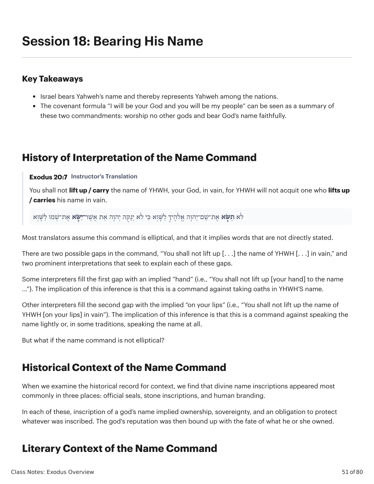
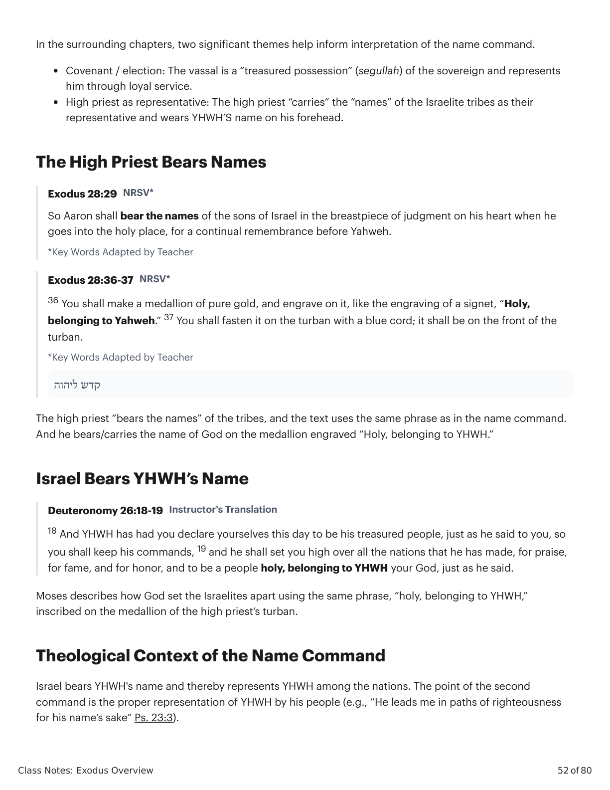
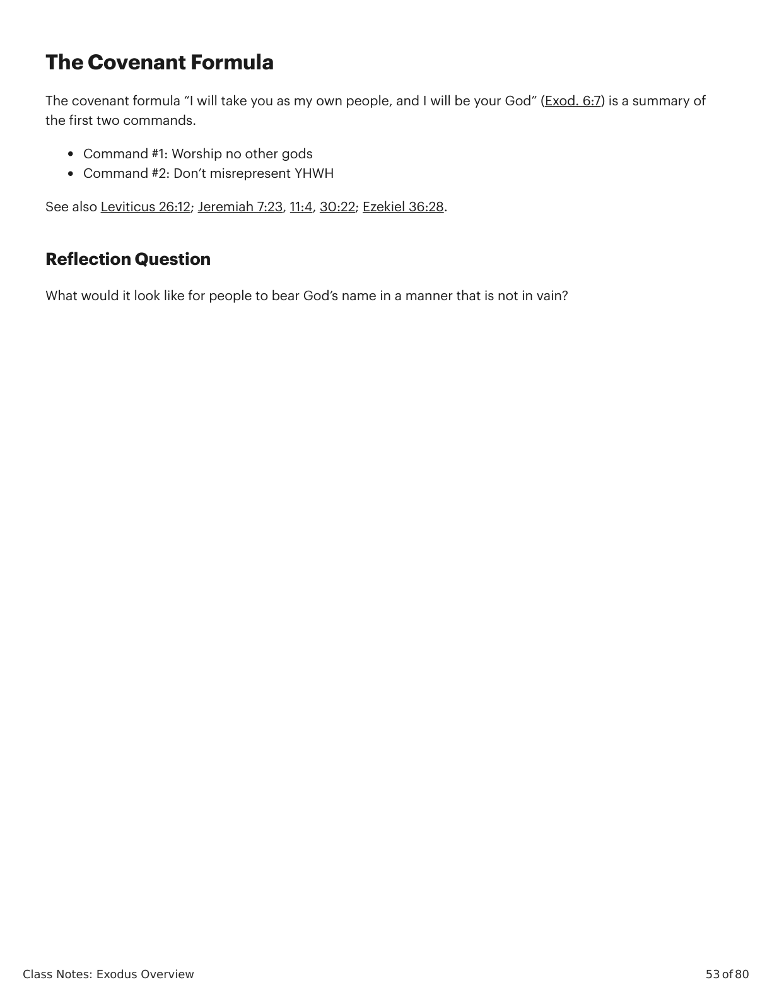

Sessão 19: [Title to be extracted]Session 19: [Title to be extracted]
\n
\n
Class Notes: Exodus Overview
51 of 80
Session 18: Bearing His Name
Key Takeaways
Israel bears Yahweh’s name and thereby represents Yahweh among the nations.
The covenant formula “I will be your God and you will be my people” can be seen as a summary of
these two commandments: worship no other gods and bear God’s name faithfully.
History of Interpretation of the Name Command
Exodus 20:7 Instructor's Translation
You shall not lift up / carry the name of YHWH, your God, in vain, for YHWH will not acquit one who lifts up
/ carries his name in vain.
ֹל ֶה י ָך ַל ָּׁש ְוא ִּכ י ֹלא ְי ַנ ֶּק ה ְיהָוה ֵא ת ֲא ֶׁש ר־ִי ָּׂש א ֶא ת־ ְׁש מֹו ַל ָּׁש ְוא
ִת ָּׂש א ֶא ת־ ֵׁש ם־ְיהָוה ֱא ֹלא
Most translators assume this command is elliptical, and that it implies words that are not directly stated.
There are two possible gaps in the command, “You shall not lift up [. . .] the name of YHWH [. . .] in vain,” and
two prominent interpretations that seek to explain each of these gaps.
Some interpreters fill the first gap with an implied “hand” (i.e., “You shall not lift up [your hand] to the name
...”). The implication of this inference is that this is a command against taking oaths in YHWH’S name.
Other interpreters fill the second gap with the implied “on your lips” (i.e., “You shall not lift up the name of
YHWH [on your lips] in vain”). The implication of this inference is that this is a command against speaking the
name lightly or, in some traditions, speaking the name at all.
But what if the name command is not elliptical?
Historical Context of the Name Command
When we examine the historical record for context, we find that divine name inscriptions appeared most
commonly in three places: official seals, stone inscriptions, and human branding.
In each of these, inscription of a god’s name implied ownership, sovereignty, and an obligation to protect
whatever was inscribed. The god's reputation was then bound up with the fate of what he or she owned.
Literary Context of the Name Command
\n

���������������Êxodo X:Y. Tradução e Design Literário por Tim Mackie para BibleProject Classroom: José (2021).Exodus X:Y. Translation and Literary Design by Tim Mackie for BibleProject Classroom: Joseph (2021).
\n
Class Notes: Exodus Overview
52 of 80
In the surrounding chapters, two significant themes help inform interpretation of the name command.
Covenant / election: The vassal is a “treasured possession” (segullah) of the sovereign and represents
him through loyal service.
High priest as representative: The high priest “carries” the “names” of the Israelite tribes as their
representative and wears YHWH’S name on his forehead.
The High Priest Bears Names
Exodus 28:29 NRSV*
So Aaron shall bear the names of the sons of Israel in the breastpiece of judgment on his heart when he
goes into the holy place, for a continual remembrance before Yahweh.
*Key Words Adapted by Teacher
Exodus 28:36-37 NRSV*
36 You shall make a medallion of pure gold, and engrave on it, like the engraving of a signet, “Holy,
belonging to Yahweh.” 37 You shall fasten it on the turban with a blue cord; it shall be on the front of the
turban.
*Key Words Adapted by Teacher
קדש ליהוה
The high priest “bears the names” of the tribes, and the text uses the same phrase as in the name command.
And he bears/carries the name of God on the medallion engraved “Holy, belonging to YHWH.”
Israel Bears YHWH’s Name
Deuteronomy 26:18-19 Instructor's Translation
18 And YHWH has had you declare yourselves this day to be his treasured people, just as he said to you, so
you shall keep his commands, 19 and he shall set you high over all the nations that he has made, for praise,
for fame, and for honor, and to be a people holy, belonging to YHWH your God, just as he said.
Moses describes how God set the Israelites apart using the same phrase, “holy, belonging to YHWH,”
inscribed on the medallion of the high priest’s turban.
Theological Context of the Name Command
Israel bears YHWH's name and thereby represents YHWH among the nations. The point of the second
command is the proper representation of YHWH by his people (e.g., “He leads me in paths of righteousness
for his name’s sake” Ps. 23:3).
\n

���������������Êxodo X:Y. Tradução e Design Literário por Tim Mackie para BibleProject Classroom: José (2021).Exodus X:Y. Translation and Literary Design by Tim Mackie for BibleProject Classroom: Joseph (2021).
\n
Class Notes: Exodus Overview
53 of 80
The Covenant Formula
The covenant formula “I will take you as my own people, and I will be your God” (Exod. 6:7) is a summary of
the first two commands.
Command #1: Worship no other gods
Command #2: Don’t misrepresent YHWH
See also Leviticus 26:12; Jeremiah 7:23, 11:4, 30:22; Ezekiel 36:28.
Reflection Question
What would it look like for people to bear God’s name in a manner that is not in vain?
\n

���������������Êxodo X:Y. Tradução e Design Literário por Tim Mackie para BibleProject Classroom: José (2021).Exodus X:Y. Translation and Literary Design by Tim Mackie for BibleProject Classroom: Joseph (2021).
\n